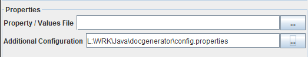

Home
Categories
Dictionary
Download
Project Details
Changes Log
What Links Here
How To
Syntax
FAQ
License
GUI tools
1 Serializing a configuration file
2 Unserializing a configuration file
3 Reset the GUI options
4 Export the CSS file specifying the default StyleSheet theme
5 See also
2 Unserializing a configuration file
3 Reset the GUI options
4 Export the CSS file specifying the default StyleSheet theme
5 See also
The "Tools" menu allows to:

The Tools menu "Save Configuration File" option allows to generate a configuration file with the current state of the GUI interface options.
Note that another way to Unserialize the configuration File is to set the "Additional Configuration" fields in the Properties area in the GUI with the previously saved configuration :
The Tools menu "Export Theme" allows to export the the default StyleSheet theme in a CSS file.
- serialize a configuration file with the current state of the GUI options
- Unserialize a configuration file and update the state of the GUI options
- Reset the state of the GUI options to their default values
- Export the CSS file specifying the default StyleSheet theme
Serializing a configuration file
Main Article: Saving a configuration file
The Tools menu "Save Configuration File" option allows to generate a configuration file with the current state of the GUI interface options.
Unserializing a configuration file
The Tools menu "Apply Configuration File" option allows to use a previously saved configuration file and update the state of the options.Note that another way to Unserialize the configuration File is to set the "Additional Configuration" fields in the Properties area in the GUI with the previously saved configuration :

Reset the GUI options
The Tools menu "Set Configuration" option allows to update the state of the options to their respective default value.Export the CSS file specifying the default StyleSheet theme
Main Article: StyleSheet theme
The Tools menu "Export Theme" allows to export the the default StyleSheet theme in a CSS file.
See also
- Saving a configuration file: This article explains how to save a configuration file with the current state of the GUI
×

Categories: General | Gui